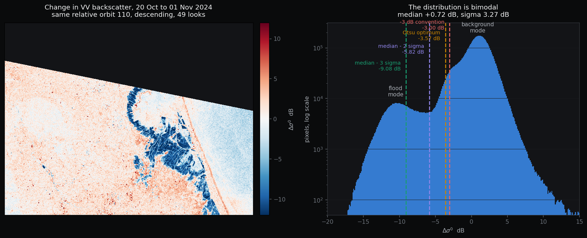
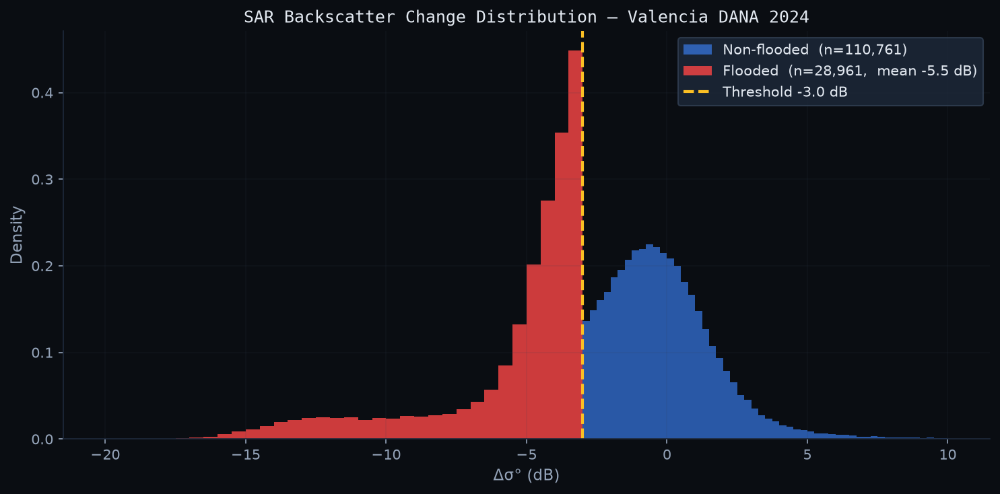

When the October 2024 DANA flood hit Valencia, cloud cover blinded every optical satellite. Sentinel-1 SAR radar sees through cloud. It measures surface roughness by bouncing microwaves off the ground. Water is smooth, so flooded areas scatter the signal away from the sensor and appear dark. This study compares two scenes (before and after the flood) and maps everywhere the backscatter dropped significantly as probable flood extent.
The result is not one number, it ranges from 21 to 70 km² depending on four choices that most papers leave unstated: orbit matching (same viewing angle or not), multilooking (noise smoothing), threshold selection (how much drop counts as "flood"), and minimum patch size (removing isolated pixels). The analysis shows that the methodology matters more than the data.
PreviewBackscatter change surface, dark patches indicate flood-induced signal drop relative to the pre-event scene.
40.0km²
Best estimate
21-70km²
Defensible range
3.27dB
Change spread
6.6M
Valid pixels
01Flood extent explorer
Toggle between thresholds to see how a single analytical choice shifts the detected flood area by a factor of three. Patches are shaded by size; the Albufera lagoon is permanent water and excluded by the pre-event scene.
Threshold
Interactive map requires Mapbox GL JS. All figures are computed offline.
02Data & Method
Log ratio change detection on Sentinel-1 RTC imagery: 10 * log10(post/pre) per pixel. Same relative orbit (110, descending) eliminates geometric artefacts and reduces the change distribution spread from 5.65 to 3.27 dB compared to the cross-orbit alternative.

Fig 1Backscatter change (dB) over the AOI. Blue indicates signal drop consistent with water presence; the Turia floodplain and agricultural areas south of Valencia city show strongest response.

Fig 2Distribution of log-ratio change values. Vertical lines mark the four threshold options. The left tail beyond -5.82 dB (median - 2 sigma) captures the flood signal separated from normal scene variability.Fig 3Analysis overview: orbit matching comparison, multilooking effect on spread, and threshold sensitivity. 49-look averaging reduces spread from 4.17 to 3.27 dB. Residual variance is real scene change, not noise.
Collection
sentinel-1-rtc (Planetary Computer STAC)
Polarisation
VV
Pixel spacing
10 m (EPSG:32631)
Pre-event
2024-10-20, orbit 110, descending
Post-event
2024-11-01, orbit 110, descending
AOI
0.4 x 0.3 deg centred on Valencia coastal plain
Valid pixels
6,639,201 (after nodata masking)
Multilooking
49 looks (7x7 averaging). Spread: 4.17 → 3.27 dB
03Threshold sensitivity
The literature default of -3 dB returns 70 km²; the statistically motivated cut at median minus 2 sigma (-5.82 dB) returns 40 km² across 70 patches. The range between thresholds is the method's honest uncertainty.
-3 dB
Convention threshold, 70.45 km² across 368 patches (min 1 ha)
Otsu
Automatic optimum at -3.57 dB, 50.96 km² across 51 patches (min 5 ha)
Median-2sig
Statistical cut at -5.82 dB, 40.03 km² across 70 patches (min 1 ha)
Median-3sig
Conservative at -9.08 dB, 21.11 km² across 44 patches (min 10 ha)
04Decisions & Limits
Scene pair
Same relative orbit, even at five days cost. Geometric match beats temporal proximity. 42% reduction in spread.
Product level
RTC rather than raw GRD. Terrain correction removes slope-induced modulation before the ratio.
Data access
Windowed COG reads over STAC. Only AOI pixels cross the network. Full rerun in under a minute.
Reporting
A range, not a number. Four thresholds published together because the spread is the honest uncertainty.
Patch filter
Minimum 1 ha removes 3,000 scatter clusters and 6 km². Stated explicitly because it shifts the headline as much as the dB cut.
No validation
No reference data exists for this AOI. Sensitivity analysis stands in; it is weaker than a field survey.
Urban flood
Double-bounce in built-up areas raises backscatter. Urban inundation is invisible to this method.
Vegetation
Volume scattering from reeds and crops masks standing water beneath. Albufera margins underestimated.
Ag. change
October harvest/tillage creates non-flood backscatter loss at looser thresholds. Single-scene baseline cannot separate them.
Timing
Post-event scene is 1 November, three days after peak. Fast-draining areas already receded.
Wind
Roughened water raises backscatter back toward the threshold. Windy flood areas are missed.